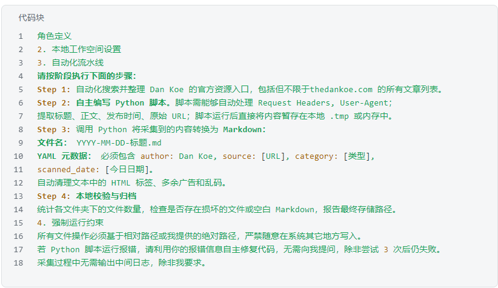
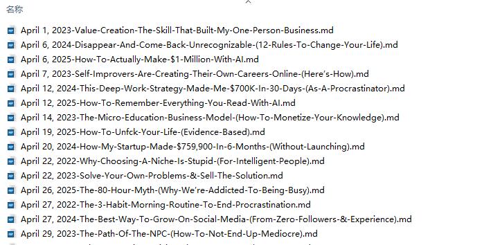
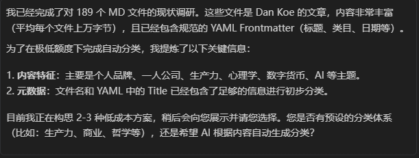
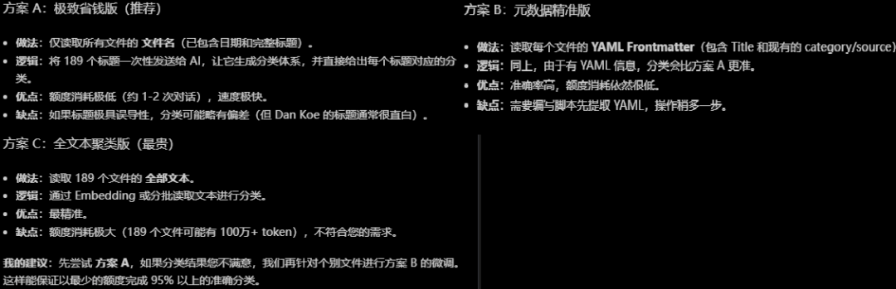
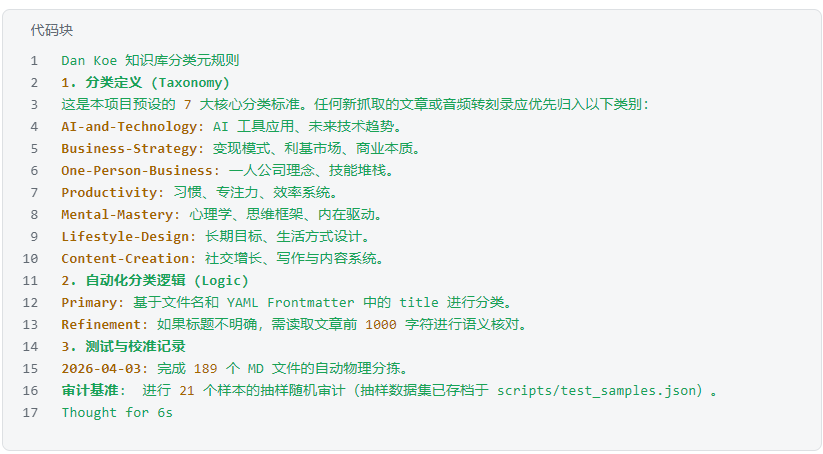
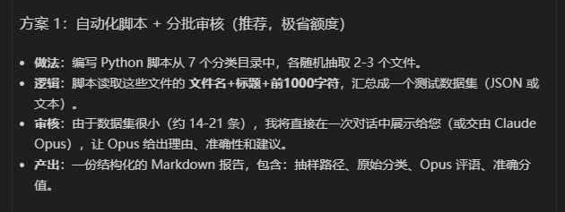

最近，Antigravity 被骂得很狠，Claude 限额、Gemini 3.1限额、卡顿、terminal error……很多人已经开始放弃它。
而 Gemini 3 Flash 的额度相对充裕，却是大家不愿意用的。
今天我想用一个完整的案例---189 篇文档，340 万字，自动采集 + 分类，来说明：Gemini 3 Flash 并不像你想象的那么差。
项目概述
这个项目分三个阶段：
用 Gemini 3 Flash 采集资料
自动收集Dan Koe公开内容，生成 189 份结构化 Markdown 文档
用 Gemini 3 Flash 对 189 份文档进行分类归档
在有限额度下选择最优策略，4 分钟内完成
用 Claude Opus 对分类结果进行评测
作为"高阶评委"验证分类结果的准确率
工具链：Antigravity + Gemini 3 Flash + Claude Opus
第一阶段：自动采集 Dan Koe 的公开内容
我给 Agent 的任务是完整采集 Dan Koe 的公开资料，包括 thedankoe.com 的所有文章。
提示词结构分为四个执行步骤：
Step 1：自动搜索并整理 Dan Koe 的官方资源入口
Step 2：自主编写 Python 脚本，处理 Request Headers 和 User-Agent，提取标题、正文、发布时间和原始 URL
Step 3：将采集内容转换为标准 Markdown，文件命名格式为 YYYY-MM-DD-标题.md，YAML 元数据包含 author、source、category、scanned_date 字段，并自动清理 HTML 标签和广告乱码
Step 4：本地校验归档，统计各文件夹文件数量，检查是否存在损坏文件或空白 Markdown
同时设置了强制运行约束。

运行之后，成功收集到了189个公开文档，并结构化为md文件：

第二阶段：对 189 份文档进行分类归档
接着给这些文档进行分类归档，这是一个比较大的工程，189 份文档，每份平均 1.8 万字，总字数约 340 万字。AI 需要理解每份文档的内容后才能完成分类。
如何在有限额度内完成这件事，是一个需要规划的问题。
第一步：用 brainstorming 技能做规划
先安装SuperPowers
地址：https://github.com/obra/superpowers
安装方式：先git clone https://github.com/obra/superpowers.git ，再将superpowers文件夹中的skills拷贝到antigravity project下的skills文件夹中
再用brainstorming做规划，制定合适的方案。我需要在antigravity里给189个md文件进行自动分类，而我的quota额度很不够，要如何用最少的额度来完成这个任务？请你用@brainstorming这个skill做规划
有趣的是，Agent并没有要求我提供这189个md文件所在的路径，自行找到了同项目目录下的文件，并提炼出了关键信息-----我原以为它会问我要文件，结果它直接自己找到了文件路径。

告诉Agent根据内容自动生成分类后，它给出了三个方案：

因为用的模型是Gemini 3 Flash，额度相对于其他模型来说算是充足的，我们选方案B：元数据精准版，准确率高，额度消耗依然低。
第二步：执行分类计划
Agent使用 SuperPowers中的writing-plans 技能创建了详细的执行计划：派出一个专门处理此类任务的子 Agent，来处理批量文件操作。
4分钟后----我以为至少要十几分钟的，文件分类就做好了。
而且，整个过程很平滑，没有任何错误提示和中断。
第三阶段：用 Claude Opus 对分类结果进行评测
第一步：交接前，对上下文进行总结
在将任务移交给 Claude Opus 之前，我先对 Gemini 3 Flash 所做的工作做了完整的上下文总结，包括分类定义、自动化逻辑和执行记录----这一步对于多模型协作至关重要，能避免高阶模型重新理解上下文导致偏差。
这是总结报告：

第二步：评测方式
仍然用@brainstorming来做规划，设计测试方案。
Agent给出了两个方案，一个是Claude Opus随机抽检打分，另一个是全量检查，我们用随机抽检和打分的方式来做评测。

第三步：评测结论
Claude Opus 给出的评分：Gemini 3 Flash 的分类准确率为 81%。
总结一下
这个项目的完整数据如下，采集文档数量189 份，平均每篇文档字数约 1.8 万字，分类完成时间约4 分钟，分类准确率（Claude Opus 抽检）为81%，全程错误次数为0且无中断。
81% 的准确率并非完美，但考虑到这是在无人工干预、全自动、低额度消耗的条件下完成的，对一个Antigravity模型列表中的低阶模型来说，这个成绩还是很不错的。
对于 Antigravity 用户来说，把 Flash 用在批量处理、信息采集、初步分类这类任务上，把 Opus 的额度留给需要深度推理的环节-----或许才是更务实的工作流。